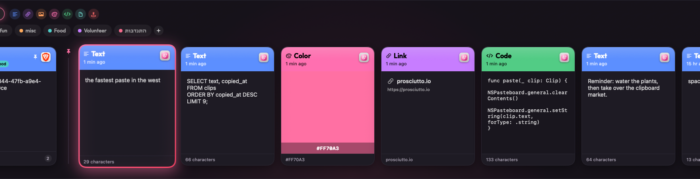

Your whole clipboard history, one keystroke away. A fast, colourful gallery that comes in nine themes. Native, private, free.
brew install --cask amirchuosho/prosciutto/prosciuttoOne command. No account, no sign-up. The cask even clears macOS Gatekeeper for you.

Every theme reskins the whole app. Tap one, this page changes too.
Text, links, code, images, files. Captured automatically.
Press ⌘⇧V. Your history slides up from the bottom.
Arrow over, press ⏎. Or ⌘1–9 for pinned clips.
Search everything you've copied, instantly.
Summon, arrow, return. Or ⌘1–9 for pinned clips.
Stays on your Mac. No cloud, no account.
Pick a personality.
Open source. One command. Zero dollars.
endorsed by extremely serious people
* None of these people are real endorsements. It is a clipboard app. Please relax.
brew install --cask amirchuosho/prosciutto/prosciutto